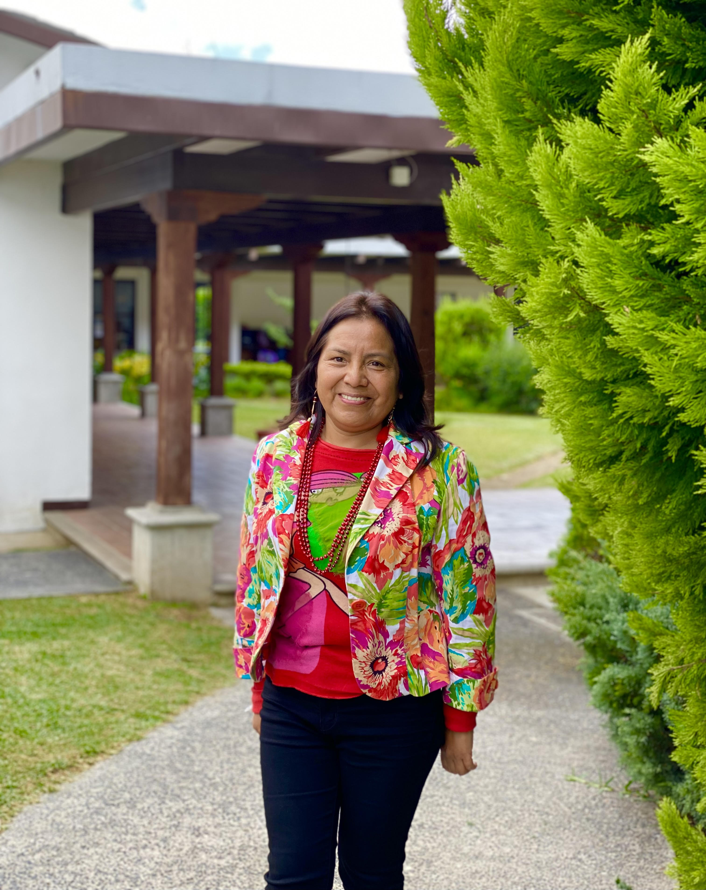

Liliana Quexel Ajuchán nació el 28 de enero de 1973 en la ciudad de Guatemala. Vivió sus primeros años en Mixco, Guatemala y desde los dos años de edad, vive en Sumpango, Sacatepéquez.
Su padre fue un lector ávido y amó la investigación y análisis, y desde los primeros años de Liliana, le enseñó a dibujar, leer y escribir. Los dibujos que le enseñó su padre fueron con trazos, o sea utilizando medidas. También fue alumna de su hermano, que se graduó de maestro cuando ella tenía dos años, y practicó con Liliana sus habilidades para la enseñanza, especialmente la lectura y escritura. Desde que era muy pequeña ama los libros. Lee y escribe desde los 5 años de edad y desde esa edad, su padre la acostumbró a leer más de hora hora cada día.
Recuerda su infancia con mucha felicidad. Ella es la última hija de sus padres y recibió mucho cariño de su madre y particularmente de su hermano que es cinco años mayor que ella. Con su hermano iban a los terrenos de su padre a ver a las personas que trabajaban en la siembra y cosecha de hortalizas y verduras. Pasaban por nacimientos de agua donde habían ranas y sapos. Liliana se divertía mucho con las plantas, las flores y le gustaba subirse a los árboles. También disfrutó de la compañía de tres perros que recuerda con mucho cariño.
